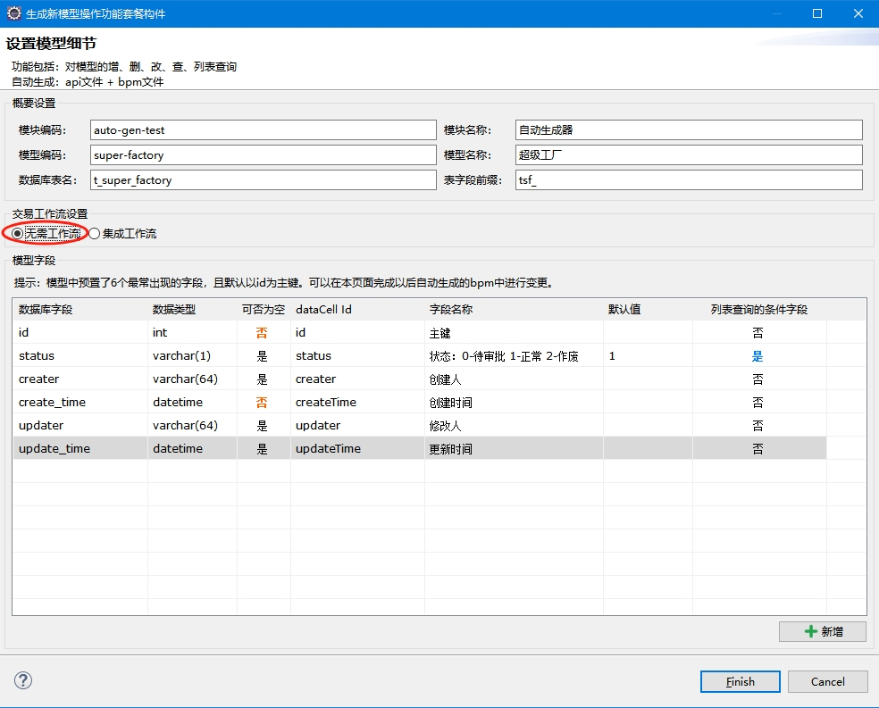

如图，选择“无需工作流”选项后，为该模型生成的“增、删、改”交易都会直接生效，不需要工作流，无需走审批流程

| 序号 | 文件性质 | 功能 | 文件 |
|---|
| 1 |
数据库ddl脚本 |
建表脚本 |
${project}/database/mysql/ddl/create_${模型code}.sql |
| 2 |
后台构件 |
增删改查接口定义文件 |
${project}/src/main/resources/edk4j/api/${模块code}/${模型code}.api |
| 3 |
增删改查业务逻辑文件 |
${project}/src/main/resources/edk4j/bpm/${模块code}/${模型code}.bpm |
| 4 |
前端构件 |
增删改查html网页和配套js |
${project}/src/main/webapp/view/${模块code}/${模型code}-manage.html |
| 5 |
${project}/src/main/webapp/javascript/${模块code}/${模型code}-manage.js |
| 序号 | 交易名称 | 接口 | 逻辑id | 交易说明 |
|---|
| 1 |
新增 |
/${modelCode}/create |
${modelCode}-manage.create |
|
| 2 |
修改 |
/${modelCode}/update |
${modelCode}-manage.update |
|
| 3 |
删除 |
/${modelCode}/destory |
${modelCode}-manage.delete |
|
| 4 |
查询明细 |
/${modelCode}/fetch-detail |
${modelCode}-manage.queryDetail |
|
| 5 |
查询列表 |
/${modelCode}/query-list |
${modelCode}-manage.queryList |
|